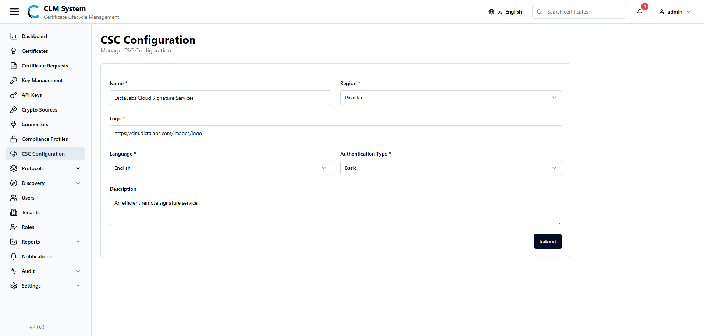
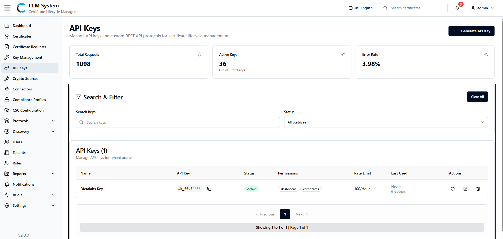
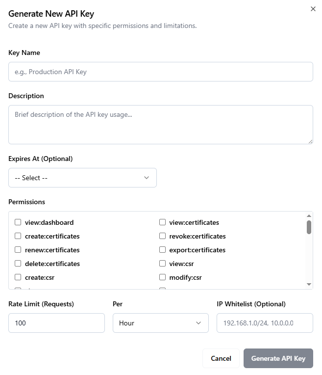

API Integration
This section explains how to integrate external systems with the CLM (Certificate Lifecycle Management) platform using its APIs. The platform provides two primary integration capabilities to meet diverse business needs:
-
CSC Signing APIs – Integrate remote digital signing capabilities directly into your own applications and workflows.
-
CLM Data APIs – Retrieve, manage, and synchronize certificate-related data within your external systems.
CSC Configuration
In the CSC Configuration tab, administrators can set up and manage CSC providers.

The configuration form includes the following fields:
- Name – The name of the CSC provider.
- Region – The operational region of the provider.
- Logo – Upload or set the logo for easy identification.
- Language – Select the preferred language for communication.
- Authentication Type – Choose the authentication mechanism.
- Description – Provide additional details about the CSC configuration.
Usage of CSC for Signing
Below are the supported CSC endpoints with their request methods, authentication details, and usage descriptions.
/csc/v2/info
Description:
Retrieves general information about the CSC service, such as capabilities, supported algorithms, and service metadata.
Method: POST
Authentication: None
Request Body: (Empty)
Response: Returns service information and configuration details.
/csc/v2/auth/login
Description:
Authenticates the user and retrieves an access token used for subsequent CSC API calls.
Method: POST
Authentication: Basic Authentication (username, password)
Request Body: (Empty)
Response: Returns an access token that must be included in the Authorization header of the following API requests.
/csc/v2/credentials/list
Description:
Fetches a list of available credentials (certificates) that the authenticated user can use for signing.
Method: POST
Authentication: Bearer Token (Access Token from /auth/login)
Request Body: (Empty)
Response: Returns a list of credentials, including credentialID, type, and associated metadata.
/csc/v2/credentials/info
Description:
Retrieves detailed information about a specific credential.
Method: POST
Authentication: Bearer Token (Access Token from /auth/login)
Request Body (JSON):
{ "credentialID": "string" }
Response: Returns details such as key type, issuer, validity period, and supported signing algorithms.
/csc/v2/signatures/signHash
Description:
Performs a digital signature operation on provided hash values using a selected credential.
Method: POST
Authentication: Bearer Token (Access Token from /auth/login)
Request Body (JSON):
{ "credentialID": "string", "hashes": ["base64_encoded_hash"], "signAlgo": "signAlgo_OID" }
Response: Returns the signature (Base64-encoded signed hash) .
Managing API Keys
View and manage API keys used for external system integration with CLM.
Accessing API Keys
From the sidebar menu, navigate to API Keys under the Integration section.
The API Keys page opens, showing an overview of all generated API keys in the system. 
API Keys Overview
At the top of the page, administrators can view summary information displayed in cards:
- Total Requests – Total number of API requests made using all keys.
- Active Keys – Number of currently active API keys.
- Error Rate – Percentage of failed or unauthorized API requests.
Search and Filter
Below the summary cards, a Search and Filter section allows administrators to:
- Search API keys by name or keyword.
- Apply filters such as status, permissions, or activity date.
API Keys List
The API Keys List Table provides detailed information for each API key, including:
- Name – The assigned name of the API key.
- API Key – The unique token string used for integration.
- Status – Indicates whether the key is Active or Inactive.
- Permissions – Modules or scopes the key is authorized to access.
- Rate Limit – Maximum number of requests allowed within the defined period.
- Last Used – Timestamp of the most recent request made using the key.
- Actions – Options to view, edit, regenerate, or revoke the API key.
This view enables administrators to efficiently monitor and manage API usage across all integrations.
Generating API Keys
API keys in CLM allow secure integration of external systems with CLM services. Administrators can generate API keys with controlled permissions, validity, and access rules.
Navigate to the API Key Page
From the sidebar menu, go to API Keys.
On the top-right corner of the page, click the Generate Key button.
Fill in the API Key Form
A form will open with the following fields:
- Key Name – Enter a unique name for the API key.
- Description – Provide a short description of the key’s purpose.
- Expires At – Select the key expiration period:
- 30 Days
- 60 Days
- Never
- Custom – Choose a specific expiration date manually.
- Permissions – Select modules or features this API key can access by checking/unchecking options in the permissions list.
- Rate Limit (Requests) – Define the number of requests allowed for this API key.
- Per (Time) – Choose the time unit for rate limiting (Hours, Minutes, or Days).
- IP Whitelist – Specify one or more IP addresses allowed to use this API key. 
Save the API Key
After completing the form, click the Generate Key button.
Using API Keys for Integration
Once an API key is generated, administrators can share it with authorized users or external systems that need to communicate with CLM services.
External applications can use the API key to securely call CLM’s REST APIs, documented at: https://YOURDOMAIN/docs.
To authenticate API requests, include the generated API key in the Authorization header as follows:
Authorization: Bearer <your-api-key>
This allows external systems to invoke CLM endpoints such as certificate management, tenant data, compliance operations, and other available modules — based on the permissions assigned to the API key.